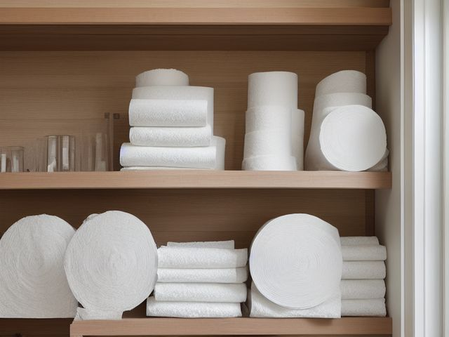

Hall Closet micro zone
The Paper and Household Backstock
Keeps a reserve of paper goods, bulbs, and batteries so you never make a late-night emergency trip.
One session: 30-45 min. most of it in Standardize, because writing honest minimum and maximum numbers is the work that lasts

What done looks like
Toilet roll in one clear bin with a card on the shelf edge reading "min 6, max 24". Bulbs in a labeled bin sorted by fitting. Batteries standing in their original packs in a shallow tray, sizes readable without lifting one out. Every bin label facing the door.
Check these before you start
- Poison, choke, or strangleButton cells and loose AAAs rolling to the closet floor where a small child finds them at eye level.
- Fall, cut, or crushA shrink-wrapped bulk pack of paper towel stored above head height slides free the moment you tug the corner of it.
What to have on hand before you start
These are types of thing, not brands. If you already own something that does the job, that is the right one to use. Each says which pass needs it and what to watch out for.
- Color-coded microfiber cloth set ×12
Wipe, dust, and dry surfaces, in the Shine pass.
Wash by use color; avoid fabric softener. - Neutral pH multi-surface cleaner
Routine cleaning of sealed surfaces, in the Shine and Sustain passes.
Verify surface compatibility; lock around children and pets. - Compact vacuum with attachments
Remove dust, crumbs, and debris, in the Shine pass.
Use appropriate attachment. - Keep, Relocate, Donate, Recycle, Trash container set ×5
Support rapid item routing during Sort, in the Sort pass.
Do not block exits. - Portable cleaning caddy
Transport and contain cleaning inputs, in the Straighten, Shine and Sustain passes.
Secure chemicals from children and pets. - Portable label maker
Create durable standardized labels, in the Standardize and Sustain passes.
Follow surface and adhesive guidance. - Removable write-on labels
Create temporary or adjustable visual controls, in the Standardize pass.
Test on delicate finishes.
Only if your paper goods storage has one: 7 more
Not every paper goods storage needs these. Each one is here because some do, and the reason is next to it.
- Toilet Paper Reserve Holder
Hold a controlled visible reserve, in the Straighten, Standardize and Sustain passes.
Do not overload; anchor wall-mounted or tall systems where required. - Medicine Bin Set
Group medicines by purpose and user, in the Straighten, Standardize and Sustain passes.
Do not overload; anchor wall-mounted or tall systems where required. - Lockable Medicine Box
Secure prescriptions or high-risk products, in the Straighten, Standardize and Sustain passes.
Do not overload; anchor wall-mounted or tall systems where required. - Min-Max Inventory Label
Control replenishment and backstock, in the Standardize and Sustain passes.
Install and use according to product instructions. - Stable household step stool
Provide safer elevated access, in the Safety pass.
Use on level surfaces only. - Shelf Location Label Set
Standardize location naming, in the Standardize and Sustain passes.
Install and use according to product instructions. - Moisture Absorber or Humidity Monitor
Detect and reduce moisture risk in enclosed storage, in the Safety and Sustain passes.
Install and use according to product instructions.
The six passes, in order
Work them in this order. Sorting after you have arranged things means arranging things you were about to remove.
Sort
Decide what stays. Everything else leaves the zone now.
Take the lot out. Loose batteries you cannot vouch for, bulbs for fittings you replaced when you went over to LED, and the bulk paper towel pack too big to lift down alone all leave now.
Straighten
Give what stays a home, placed where the hand actually reaches.
Toilet roll goes into the clear bin loose so you can see the level drop, bulbs stay in their boxes grouped by fitting, and batteries stand upright in a shallow tray by size so you read AAA from AA without picking one up. Heaviest packs at waist height, every label turned to the door.
Shine
Clean it, and use the cleaning to inspect what you cannot see when it is full.
Wipe the shelf and check the tray bottom for the white crust that means a cell has leaked. Press the underside of paper packs stored against a cold outside wall to feel for damp before you restock them.
Surface by surface, all 6 of them, with what to use on each.
Safety
Make the zone safe for everybody who uses it, including the shortest person.
Loose batteries whose terminals touch metal or each other can short and heat up, and a button cell dropped on a closet floor is exactly the size a toddler swallows. Keep cells in their packs, tape the terminals of any loose 9-volt, and store nothing at floor level here.
Standardize
Write down the best way you know today, so it survives you forgetting.
The minimum and maximum go on the shelf edge in front of each bin, not in your head. Below the minimum puts it on the shopping list; at the maximum you stop buying it regardless of the offer.
Sustain
Attach the reset to something that already happens, so it keeps itself.
Lifting the last toilet roll out of the bin is the moment you are below the minimum, and it goes on the list before you leave the hallway.
The offer that made you buy twelve
Bulk buying feels thrifty right up to the point where a warehouse pack blocks the shelf and you buy more anyway because you cannot see past it. Set your maximum as the number that fits inside the bin without stacking above the rim, then hold it: if a deal will not fit the bin, the deal is not for you. And date each pack with a marker as it arrives, pulling the oldest first. Undated bulk is where the saving quietly expires.
Cleaning it properly, surface by surface
This reserve sits untouched for weeks, which is exactly how a leaked battery or a damp pack goes unnoticed. Wiping the shelf is really a chance to catch both while the bins are out.
Work down, not across. Whatever comes off a high surface lands on the one below it, so cleaning the floor first means cleaning it twice.
Carry these in with you. Compact vacuum with attachments; Color-coded microfiber cloth set; Neutral pH multi-surface cleaner; Portable cleaning caddy.
- The shelf boards, top down
Clear each shelf, vacuum the dust and any cardboard flecks a pack has shed, then wipe the board with neutral cleaner and dry it before the bins go back. - The clear toilet-roll bin
Lift the bin out and tip the paper dust and cardboard bits from the bottom corners, then wipe it inside and out so the 'min 6, max 24' card on the shelf edge stays readable through the side. - The bulb bin
Empty the bin and wipe it out with a barely damp cloth, then set the bulbs back sorted by fitting, keeping the cloth away from the contacts and metal bases as you handle them. - The battery tray
Lift the shallow tray out and wipe the bottom, watching for a white crust, then dry it before the packs stand back in it with their sizes facing the door. - The paper packs and the wall behind them
Press the underside of each pack stored against the cold outside wall to feel for damp, and wipe the wall itself where condensation beads before you restock against it. - The closet floor
Vacuum and wipe the floor, keeping the habit of storing nothing down here so a rolled-away cell or a dropped bulb shows up at once.
Inspect as you clean. Cleaning is the only time you see the zone empty, so use it.
- A white or crusty powder in the battery tray, or on the terminals of a loose cell, is a leaked battery. Flag it as you find it.
- A battery that has puffed up or split its wrapper in the pack. Note it before it goes back among the good ones.
- A paper pack that feels soft or damp on its underside, and a wall behind it that reads cold and wet, point to condensation off the outside wall or a slow leak. Flag it.
- A spare bulb with a darkened base or a loose rattle inside is already spent. Note it rather than reshelving it as a working spare.
The standard that keeps it fixed
Every bin carries a minimum and maximum on the shelf edge, stock is dated with a marker on arrival, and the oldest pack is pulled first.
Reset trigger. When you take the last roll or the last pack of bulbs out of a bin, the restock goes on the shopping list on that same trip to the closet.
The rest of the hall closet, in working order
Each of these is one session on its own. Finish this zone before you open the next.
- The Linen Shelf Zone
- The Cleaning Equipment Zone
- The Cleaning Supply Zone
- The Paper and Household Backstock, you are here
- The Seasonal and Guest Zone
The Hall Closet in full, with what each of the 5 zones is for
Related reading
- What is 6S?
- This zone's safety pass, in full
- Is one spot in this zone always the one you skip?
- Why this zone gets messy again
- Decluttering vs. organizing
- Before you buy storage for this zone
- Still does not fit, even after the honest count?
- Does something in this zone actually get used somewhere else?
- Stuck on one item in this zone?
- Written the standard, but nobody else follows it?
- Does everyone in the house agree what "done" looks like here?
- Does more than one person use this zone?
- Found a duplicate of something in this zone?
- Why the standard above names one home per category
- Is the everyday item in this zone actually the easy one to reach?
- Not sure whether to keep something in this zone?
- Does this zone keep running out of something?
- Started this zone and stalled partway through?
- Have you stopped noticing the clutter in this zone?
When you want it off the screen
Carry The Paper and Household Backstock into the room
The method above is complete and free. The Whole House Print Pack puts The Paper and Household Backstock and the other 113 micro zones on 684 printable cards, so the steps you just read are not stuck behind a phone screen while your hands are full.
The Print Pack, 19 dollarsJust this zone, 4 dollarsOr draw a card free
The Paper and Household Backstock on its own is 4 dollars for 6 cards. All 114 micro zones is 19 dollars for 684. The whole house is the better buy; the single zone is here so you can take only what you are working on.
If The Paper and Household Backstock keeps fighting back, the real problem usually sits somewhere else in the room. A one hour virtual consult is 250 dollars: we find the function, the friction and the root cause together, and you keep a written standard for the space. See what a consult covers.